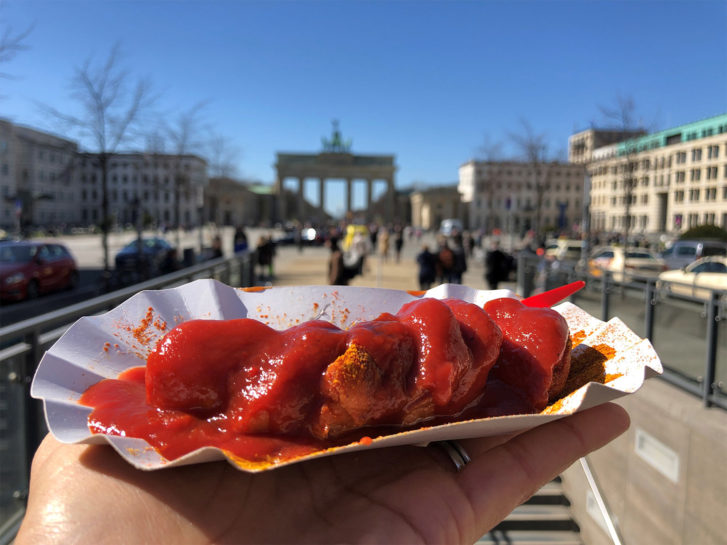
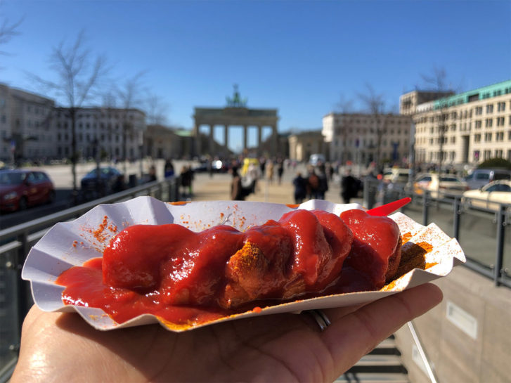

We will take a public bus route that goes by all the major sights in Berlin. Students will get a sense of the city.
A bus tour through Berlin offers a sweeping introduction to the city’s history and sights, passing landmarks from the Brandenburg Gate and Reichstag to the remains of the Berlin Wall at the East Side Gallery. Modern icons like Potsdamer Platz and the glass dome of the Reichstag contrast with solemn memorials such as the Holocaust Memorial, while Tiergarten park and the grand Victory Column show us the green in the urban landscape. This can al be seen from a public bus.
Afterwards we will walk around Berlin and try the famous Berliner Currywurst.